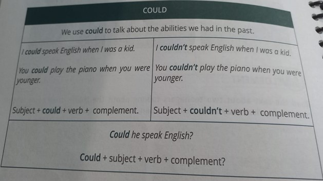

ingles 3
Read the grammar chart
The comparative adjectives are used to compare a certain characteristic or quality between two or more things, animals or people.
Irregularities help us draw grammatical boundaries, and knowing them prepares us for every possible situation in a Spanish conversation.
Also, the irregular comparative adjectives and adverbs are such a small group that it will take you about 10 minutes to learn them all, the time you will spend reading this article.
If it is a two-syllable adjective and ends in "y", the "y" changes to "i" and ad "-er". If the adjectives are “long adjectives” (adjectives with two or more syllables), you are going to add the word “more” before the adjective.
Ask yourself or someone else what they are doing right now. The answer will be within the framework of this mode of conjugation. Therefore, this tense in English is essential to start conversations with other people, among other situations that will be discussed throughout this article.
The verb to do or to does is translated as to do in Spanish. Like the verb to be, to do varies in form in the present tense depending on which pronoun it is conjugated with.
Using Going to Going to is used to express strong future plans or events
.It is important to note that in this form of the future tense the verb to be is used in the present, for example:

We can use reason with a to-infinitive: There's no reason to be suspicious – everything, is perfectly normal. You have every reason to demand a guarantee in writing. I would do that at once, if I were you.

One of the common uses of "will" is to refer to things that we believe but are not 100% sure of, both about the present and the future:
Many languages have a way to talk about the future tense, but there are four ways to use the future tense in English!
It is a modal verb because it must always be accompanied by another verb with its own meaning and in the infinitive mode (without to). Could is the past or conditional form of can and would translate as "could" or "knew". It is usually used in the English second conditional.
They serve to give continuity to a conversation, they invite a response. The following two points help us form the confirmation questions with can. Confirmation questions can be translated as right?
Like, love and hate are used to express our preferences and likes in a positive or negative way. Like = like (favorable feeling, desire, or preference); Love = to love, to love (intense emotion of affection towards a person or thing); Hate = hate (not to like something or someone intensely).
Telling someone what to do may sound rude or impolite. So in Spanish, just like in English, there are a variety of ways to ask people to do something or to do what might be called soft commands.